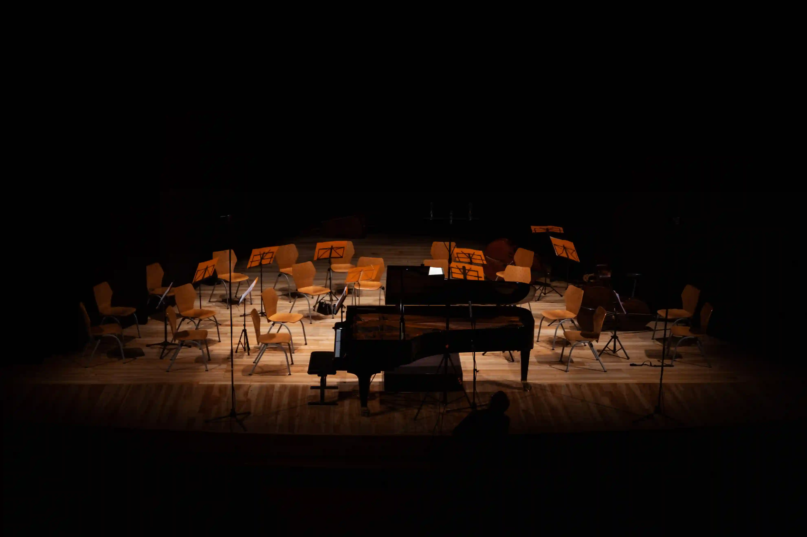

Est. 2010
Shaping musical
excellence.
At Stackly Music Academy, true artistry is forged through dedicated practice, expert mentorship, and spaces designed to inspire — for over fifteen years.
- 3,000+Alumni worldwide
- 15Years teaching
- 24Faculty members
Academy
Our Philosophy
What we believe about music.
Discipline is the first act of creativity.
Before imagination can lead, the hands must be trained to follow without thinking. Technique is not constraint — it is liberation from constraint.
Every student deserves the stage.
Performance is not the reward for learning. It is part of the curriculum from day one. We build performers, not just practitioners.
Tradition and innovation are not opposites.
We teach Carnatic raga and DAW production in the same hallway. The most interesting music lives at the boundary between what came before and what comes next.
Our Alumni
Graduates performing everywhere.
Alumni worldwide
Years of excellence
Faculty members
Disciplines taught
How We Teach
Our approach, in practice.

One-to-one mentorship, always.
Every student is assigned a primary mentor who follows their progress from their first lesson to their first public performance. Group classes supplement; they never replace individual attention.
Perform from the very first month.
Recitals are not reserved for advanced students. We build a culture of performance into every level — informal studio shows, peer concerts, and community events happen throughout the year.


Tradition meets the studio.
Our production lab sits thirty feet from our Carnatic vocal studio. Students are encouraged to move between worlds — the rigor of classical form and the freedom of contemporary production are both essential.
Our Mentors
Guided by masters.

“Technique is the servant, not the master.”Bio ↗

“The bow doesn’t move the string — gravity does.”Bio ↗

“Your voice is you. That is what makes it extraordinary.”Bio ↗

“Carry the past forward — with your own breath in it.”Bio ↗

“A DAW is a brush. Technology does not replace taste.”Bio ↗
In the Press
What they’re saying about us.
Stackly has produced some of the most technically rigorous and emotionally intelligent young musicians we have seen audition in recent years. Their training clearly goes beyond scales and theory.
A rare institution that takes both classical tradition and contemporary production equally seriously. The results speak for themselves.
The faculty at Stackly bring real performance experience into the classroom — and students feel that difference on day one.
Start Here
Ready to find
your rhythm?
Book a trial class. Tour the facilities. Meet the faculty. No commitment required.